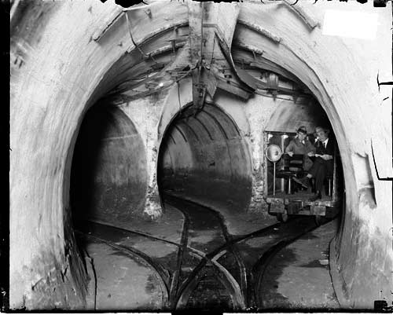

 |
"The tunnels are forty feet under the surface. They are below the sewers, below the mazes of pipes, wires, cables and conduits, below the level of any subway that may be built. They are unheard as well as unseen.” - What The Freight Tunnels Mean To Chicago , Published by the Chicago Tunnel Company Out of sight, out of mind. It's a powerful argument and one that seems to sum up Chicago's attitude towards one of its biggest forgotten treasures. This city, like others, takes pride in what makes it different from others. We have the el, the grid system, Resurrection Mary, Al Capone, a cost of living close to reality and of course, the lovable losers the Cubs. Chicagoans define in some ways what it means to be from here by these very items. So why do we always forget one of the biggest of Chicago originals: The Chicago Tunnel Company Freight System? Construction on a freight tunnel network began in 1899 in a small Loop tavern's basement near LaSalle and Madison Streets. Workers dug a small access tunnel from the basement down to the center of the intersection 40 feet below. Although the tunnels were officially constructed to house only telephone cables, the Illinois Tunnel Company also secretly installed railroad tracks in them. The company was interested in running miniature freight trains in the tunnels. Trains would enter Loop building basements to pick up and deliver packages and mail. In addition, the trains would deliver coal to, and remove cinders from, building boiler rooms.
By 1906, freight service was officially established. The tunnel system was expanded over the next 24 years to include approximately 60 miles of track. Never really the most economic of ideas, the system struggled until its close in1959. The system seemed to never have reached its full potential due in part it seems because no one ever saw these tunnels or freight workers so no one knew about them or used them. So few people knew about the tunnels when they closed that the city hired two former tunnel employees to walk the tunnels everyday looking for damage. The two men did this for 21 years.
As with many things, the tunnels would rear their ugly head in the worst of times. During the Cold War in the early 1960s, the city installed working lights in some segments of tunnel near City Hall. These were to be used as fallout shelters in the event of a nuclear attack. In 1968, the Sheriff of Cook County was considering using the tunnels to detain thousands of demonstrators during the infamous Democratic Convention. In the ‘70s and ‘80s the tunnels enjoyed reasonable notoriety as Commonwealth Edison negotiated with the city to use some of the abandoned tunnels as conduits for high voltage cables. Several telecommunications companies also began to use the tunnels for their cables, which is quite ironic, considering that the tunnels were originally constructed for this purpose. In 1980 when Bruce Moffat wrote his book about the system called Forty Feet Below, The Story of Chicago's Freight Tunnels. By the late ‘80s, Geraldo Rivera hosted a television special called Al Capone's Vault. But still, to the general public, out of sight out of mind. Early in 1992, a contractor working for the city drove a wooden pile next to the wall of a drift under the river near the Kinzie Street Bridge. The pressure from the pile began to cause a leak in the wall, which was small at first. A cable television employee spotted the leak and even captured it on videotape, and then brought the problem to the attention of the city. Unfortunately, the city allowed the leak to continue for several months without repair. Eventually, the drift wall gave way, and the river poured into the tunnels. The water completely flooded the system, including many basements that were still connected to it. The Loop was shut down for days, and the flood caused millions of dollars in damage. And now today, despite all that has happened, if you mention the Chicago Freight Tunnels to someone on the street most people don't have a clue about it. The system is like the forgotten redheaded stepchild of Chicago engineering and the city seems content to leave it that way. Forget all you want Chicago because in the end the tunnels are doing what they were meant to do: To be unseen and unheard. Photo courtesy of the Chicago Historical Society: Chicago Daily News negatives collection, DN-0003451 |